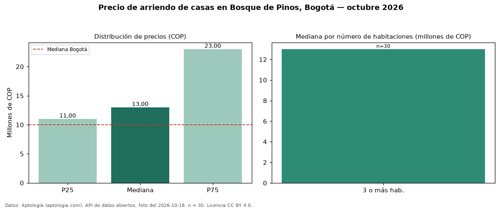

Precio de arriendo de casas en Bosque de Pinos, Bogotá — octubre 2026
En Bosque de Pinos (localidad de Usaquén), Bogotá, la mediana de canon mensual de casas es COP 13 millones, según 30 avisos vigentes. Eso la ubica 30 % por encima de la mediana de Bogotá para casas (COP 10 millones). Con la mediana de venta del mismo barrio (COP 1,90 mil millones), el arriendo anual equivale a 8,2 % del precio de venta: una aproximación gruesa a la rentabilidad bruta, porque compara medianas de ofertas distintas. El segmento con más oferta es el de 3 o más habitaciones (30 avisos, mediana COP 13 millones). 100 % de los avisos incluye parqueadero. La mitad central de los avisos va de COP 11 millones a COP 23 millones (razón 2,1), una dispersión alta. Por mediana, es el puesto 11 de 26 barrios de Bogotá con al menos 30 avisos de casas en arriendo: en la franja media. Datos: Aptología (aptologia.com), API de datos abiertos, licencia CC BY 4.0 — https://www.aptologia.com/casas-en-arriendo/bogota/bosque-de-pinos. Archivos: PDF de 2 páginas, CSV con las cifras y gráfica PNG.

| Avisos únicos | 30 |
|---|---|
| Percentil 25 | COP 11.000.000 |
| Mediana | COP 13.000.000 |
| Percentil 75 | COP 23.000.000 |
Fuente: avisos vigentes de portales inmobiliarios recopilados por Aptología, deduplicados (mínimo 30 avisos únicos por celda). Precios pedidos, no cerrados. Fecha: 2026-10-18.